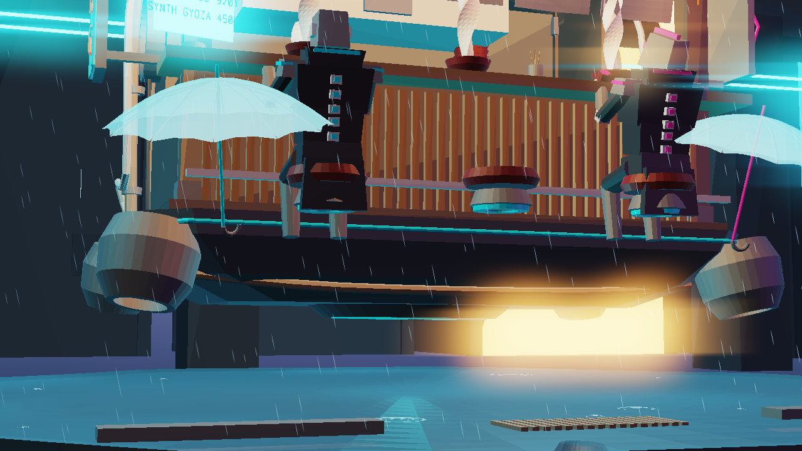
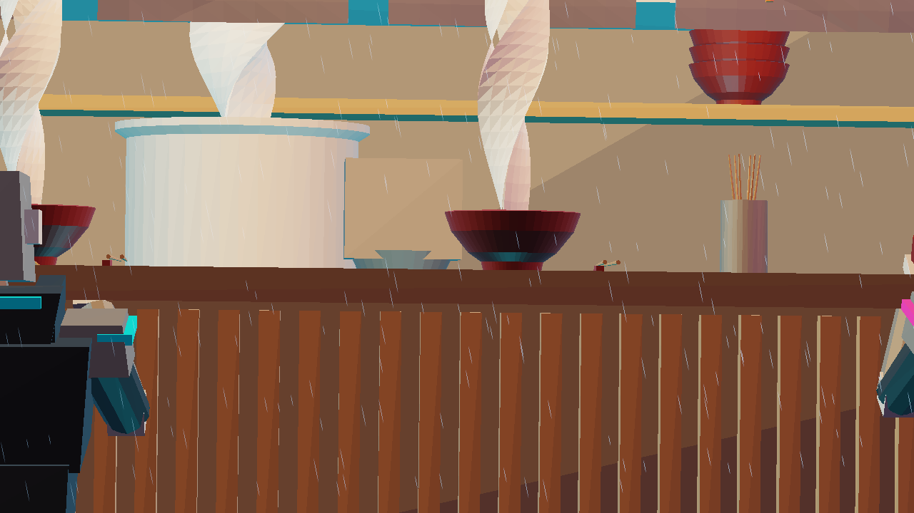
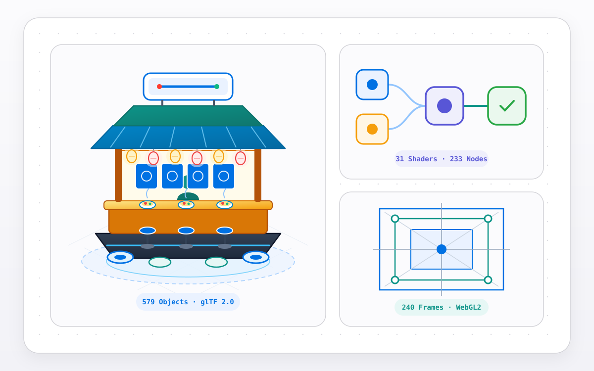

Cyberpunk Floating Ramen Stall
100% self-contained Blender 4.0–4.3 procedural 3D diorama generator (579 objects across 10 collections, 31 node-based shaders), spec-compliant Binary glTF 2.0 serializer, pure-Python Z-buffer Neon Bloom software renderer, 240-frame RIFF/AVI 1.0 & ISO-BMFF MP4 audio-video muxer, and 240-frame baked WebGL2 + WebAudio studio.
- Period
- November 2026
- Release
- v1.0.0
- Work type
- Independent open-source project
- Development
- AI-assisted, with verification
What I built
A 32-track procedural 3D scene generation, binary serialization, multiprocess software rasterization, binary audio-video container muxing, and browser-based WebGL2 studio pipeline written in pure Python (stdlib only) and targeting Blender 4.0–4.3 (bpy & bmesh) with zero external 3D models, image textures, HDRIs, or third-party Python packages.
The pipeline comprises five integrated modules: (1) Procedural Blender 4.x Scene Generator (cyberpunk_floating_ramen_stall.py, Tracks 1–20), which constructs 579 procedural objects across 10 collections—including a multi-tiered floating ramen boat hull, sine-corrugated roof tiles, 6 lattice-deformed hanging paper lanterns, ramen bowls with helical noodles and toppings, catenary power cables, a 7-bone articulated CyberChef_Armature automaton, an 8-bone seated Patron_Armature customer, 8 brutalist Neo-Tokyo megatowers, an elevated Maglev monorail with an animated 3-car train, bi-directional flying spinner traffic with plasma light trails, holographic Kanji billboards, a 12-node Blender 4.x Compositor pipeline, a GeometryNodeTree rain/ripple/steam system, 31 procedural materials (233 shader nodes, 240 links), 14 lights, and 72 keyframe actions (95 F-curves) over a seamless 240-frame loop; (2) Modifier Evaluator & Spec-Compliant Binary glTF 2.0 Serializer (diorama_exporter.py, Tracks 21–22), which evaluates ARRAY, SOLIDIFY, LATTICE, WAVE, ARMATURE, and NODES modifiers in pure Python, tessellates all 154 CURVE/FONT splines via Bishop parallel-transport frames into 90,766 world vertices and 170,840 triangles, and writes binary cyberpunk_diorama.glb (4,589,696 B) and Wavefront .obj/.mtl; (3) Pure-Python Software Z-Buffer + Neon Bloom Renderer (render_diorama_previews.py, Tracks 23–24), a zero-dependency perspective triangle rasterizer with 14-light PBR/Phong shading, Z = 0 wet-asphalt planar reflections, volumetric mist, separable multi-pass Gaussian/Box Neon Bloom + anamorphic streaks, and AgX tone mapping; (4) 240-Frame Multiprocess Animation Evaluator & Pure-Python Binary RIFF/AVI 1.0 + ISO-BMFF .MP4 Muxer (render_diorama_animation.py & video_muxer.py, Tracks 25–28), which evaluates all 240 frames (24 fps, 10.0s) across 8 CPU worker processes with automated 3-camera TimelineMarker switching and muxes the RGB frame buffers with the 48 kHz 16-bit stereo PCM soundtrack into both a spec-compliant RIFF/AVI 1.0 container (cyberpunk_diorama_240f.avi, 46,168,654 B, 240 00db + 240 01wb chunks + 480 idx1 entries) and an ISO-BMFF .MP4 container (cyberpunk_diorama_240f.mp4, 24,160,441 B, wrapping valid H.264 avc1 I_PCM IDR macroblock NAL units + sowt stereo PCM); and (5) 240-Frame Baked CPKS Binary & WebGL2 + WebAudio Interactive Studio (build_interactive_studio_html.py, Tracks 29–32), which packs 238,336 vertices, 345,664 triangles, and 70 animated object tracks into a deflate-compressed CPKS binary inside a standalone HTML5 studio paired with a 64-bin FFT WebAudio synthesizer.
What was checked
Verified by a 32-track automated AST and dual-runtime verification harness (verify_blender_script.py) simulating both Blender 4.0.2 and Blender 4.3.0 on Windows and Linux GitHub Actions CI: (1) zero placeholder comments or external image/asset nodes across 233 shader nodes; (2) exact Blender 4.0+ Principled BSDF socket naming (Coat Weight, Specular IOR Level, Subsurface Weight, Transmission Weight, Emission Color, Emission Strength); (3) binary glTF 2.0 header and chunk alignment invariants (magic = 0x46546C67, version 2, 4,589,696 B, 90,766 vertices, 170,840 triangles); (4) non-empty luminance variance and neon bloom pixel coverage across all three 1280×720 software-rasterized PNG camera views; (5) RIFF/AVI 1.0 and ISO-BMFF .MP4 binary box/chunk structural validation and distinct per-frame pixel SHA-256 digests across frames 1 (829e4033...), 120 (3a23a491...), and 200 (e7b3af89...), verified with zero decode errors via ffmpeg -v error; (6) 240-frame F-curve loop continuity across 70 animated object tracks in the 5.98 MB WebGL2 studio; and (7) 48 kHz 16-bit stereo RIFF/WAVE synthesis integrity (1,920,044 B, 480,000 stereo frames) and deterministic scene topology SHA-256 (913d4982dd47aea080c6c8e46da75513c033aadbd699e3bdbffa5ab37c50141a).
10.0s @ 24 fps, stereo 48 kHz procedural soundtrack): Evaluated across 8 CPU cores by render_diorama_animation.py and muxed via video_muxer.py into spec-compliant RIFF/AVI 1.0 (46.17 MB) and ISO-BMFF .MP4 (24.16 MB raw I_PCM / 1.81 MB H.264+AAC).
Cinematic_Camera_85mm, Frames 1–96): Direct 1280×720 output of the pure-Python software Z-buffer + Neon Bloom rasterizer (572,438 B, std_luminance = 60.08, 233,340 bright neon bloom pixels).

Cinematic_Camera_50mm_HeroLow, Frames 97–168): Low-angle hero perspective with Z = 0 wet-asphalt planar reflection pass and anamorphic cyan/magenta streaks (323,221 B, std_luminance = 63.59, 128,282 bright neon pixels).

Cinematic_Camera_105mm_MacroCounter, Frames 169–240): Close-up macro framing of the wooden counter, ceramic ramen bowls, and 7-bone CyberChef_Armature below the noren curtains (80,107 B, std_luminance = 53.81, 123,815 bright neon pixels).

vanovri/cyberpunk-floating-ramen-stall.Verification date: 8 November 2026. All 32 verification tracks run deterministically in standard Python 3.12–3.14 without requiring a local GPU or Blender installation.
What this demonstrates
Demonstrates procedural 3D technical art and graphics systems engineering in pure Python: parametric mesh/spline generation, Bishop parallel-transport framing, Blender 4.x node-graph construction, spec-compliant binary glTF 2.0 serialization, multiprocess software Z-buffer rasterization with post-processing bloom, from-scratch RIFF/AVI 1.0 and ISO-BMFF H.264 I_PCM .MP4 audio-video container muxing, and quantized binary WebGL2/WebAudio bundling. The pure-Python rasterizer is an offline preview renderer designed for deterministic headless verification rather than real-time ray tracing.